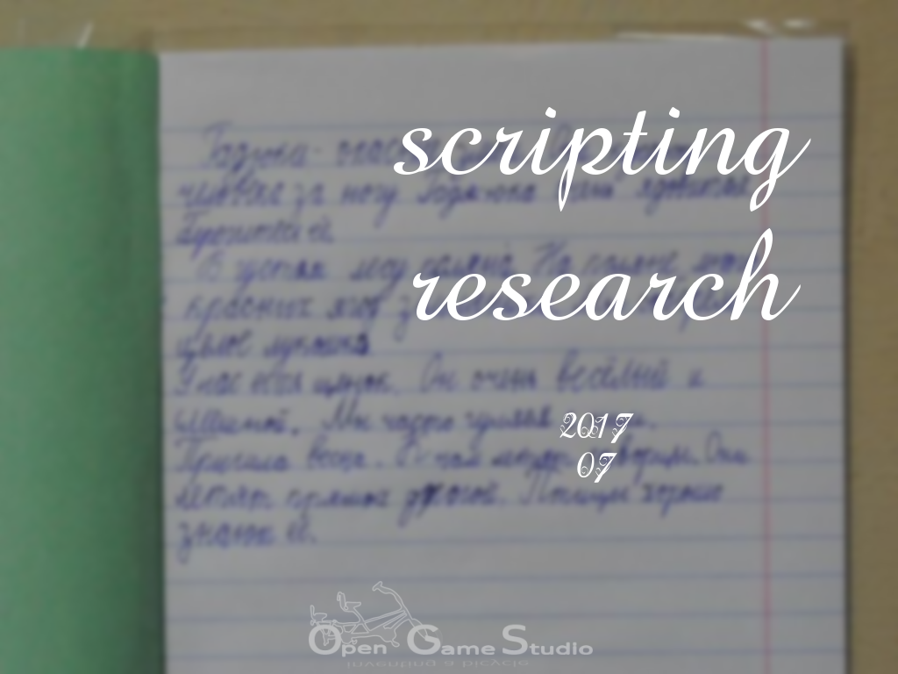

2017-08-16 00:00

Эта статья описывает изучение скриптования в июле 2017.
Наша основная цель использования скриптового языка - это наличие платформо-независимого кода, выполняемого без изменений на каждой поддерживаемой платформе.
Редактор 0.10 использует Python в качестве подобного кода с помощью SWIG. SWIG позволяет использовать практически любой код C/C++ из языков вроде Python, Ruby, Lua, Java, C# и т.д.. SWIG помог нам впервые оценить прелесть платформо-независимого кода. К сожалению, SWIG работает лишь в одном направлении: из C/C++ в язык назначения. Это приводит к тому, что основное приложение должно быть написано на языке назначения, а код C/C++ может быть использован лишь в виде библиотеки.
Основное приложение на языке Python вполне подходит для десктопа, но не для мобилок и веба, где языки C и C++ являются единственными языками, поддерживаемыми нативно на каждой платформе. Конечно, существуют проекты вроде Kivy, которые позволяет разрабатывать кросс-платформенные приложения на Python, но они не поддерживаются нативно. Отсутствие нативной поддержки выливается в огромную головную боль при изменении API у Android и iOS.
Необходимость в приложении на C/C++ и поддержке скриптов приводит к обязательному интерпретированию скриптового языка самим приложением. Это как раз то, что SWIG, Kivy и подобные проекты не позволяют сделать.
Наша вторичная цель использования скриптового языка - это возможность расширения кода C++.
Одни модули Редактора 0.10 написаны на C++, а другие на Python. С точки зрения основного приложения, все модули равны. Для приложения нет никакой разницы, на каком языке написан конкретный модуль.
Для достижения этой гибкости мы ввели так называемое Окружение (Environment). Каждый модуль регистрирует ключи (keys), на которые он отвечает, а Окружение доставляет соответствующие сообщения. Технически такое поведение можно достигнуть с помощью наследования базового класса и переопределения его методов как в C++, так и в скриптовом языке.
Python был первым языком, который мы рассмотрели в качестве платформо-независимого скриптового языка.
Т.к. мы уже использовали Python, то логично было начать изучение с него. Мы хотели проверить, можно ли запустить код Python на каждой поддерживаемой платформе. К сожалению, результаты были удручающими, т.к. документация CPython (реализация Python, используемая по умолчанию на десктопе) никак не упоминала ни мобилки, ни веб. Всё, что мы нашли, - это пара форков CPython лохматых годов, которые якобы работают либо на Android, либо на iOS. Такой раздрай нас не устроил. Мы также рассмотрели PyPy, ещё одну реализацию Python, но она тоже не содержала информации о мобилках и вебе.
Это было чётким сигналом об отсутствии интереса к мобилками и вебу со стороны сообщества Python. Либо об отсутствии времени даже на то, чтобы описать использование Python на данных платформах. В любом случае, такое положение вещей нас не устроило.
Wren был вторым языком, который мы рассмотрели в качестве платформо-независимого скриптового языка.
Wren был первым языком из длинного списка малоизвестных скриптовых языков.
Wren преподносился как небольшой и простой язык. Согласно документации, основная цель Wren - это быть встроенным в приложение. По иронии судьбы, у автора не было времени описать в документации встраивание Wren в приложение. Когда мы спросили о сроках публикации этой критически важной части документации, мы получили в ответ ссылку на тикет, в котором другой человек спрашивал тот же самый вопрос полгода назад!
На этом мы закончили отношения с Wren.
Chai был третьим языком, который мы рассмотрели в качестве платформо-независимого скриптового языка.
Chai был в том же длинном списке малоизвестных скриптовых языков. Он преподносился как язык, специально предназначенный для встраивания в приложения C++. Мы без проблем вызвали функцию C++ из Chai, но нам не удалось вызвать метод класса. Мы попросили о помощи, но ответом была лишь тишина.
Нам пришлось завершить отношения с Chai.
Lua был четвёртым языком, который мы рассмотрели в качестве платформо-независимого скриптового языка.
Lua является популярным языком для встраивания. Мы решили попробовать очевидный вариант. Документация выглядела многообещающе, однако под конец чтения главы C API у нас не было ни малейшего представления, как наследовать класс C++ в Lua.
Этот вопрос заставил нас найти библиотеку, которая смогла бы на него ответить: Sol2. Первая попытка вызвать функцию C++ из Lua провалилась. Правда, на этот раз наш вопрос был услышан, и мы получили ответ! Мы были сильно удивлены. Далее мы попытались наследовать класс C++ в Lua, чтобы переопределить методы класса. Нам это не удалось с первого раза, но автор Sol2 снова помог нам.
В тот момент мы поняли, что это начало долгого и взаимовыгодного сотрудничества с Sol2/Lua.
Поиск скриптового языка открыл для нас следующую истину: люди важнее технологий.
Существует множество скриптовых языков, которые выглядят привлекательно на первый взгляд, но которые мертвы. Почему? Потому что у некоторых авторов нет времени на пользователей. В ответ пользователи предпочитают не тратить своё время на проекты подобных авторов.
На этом мы заканчиваем описание изучения скриптования в июле 2017.